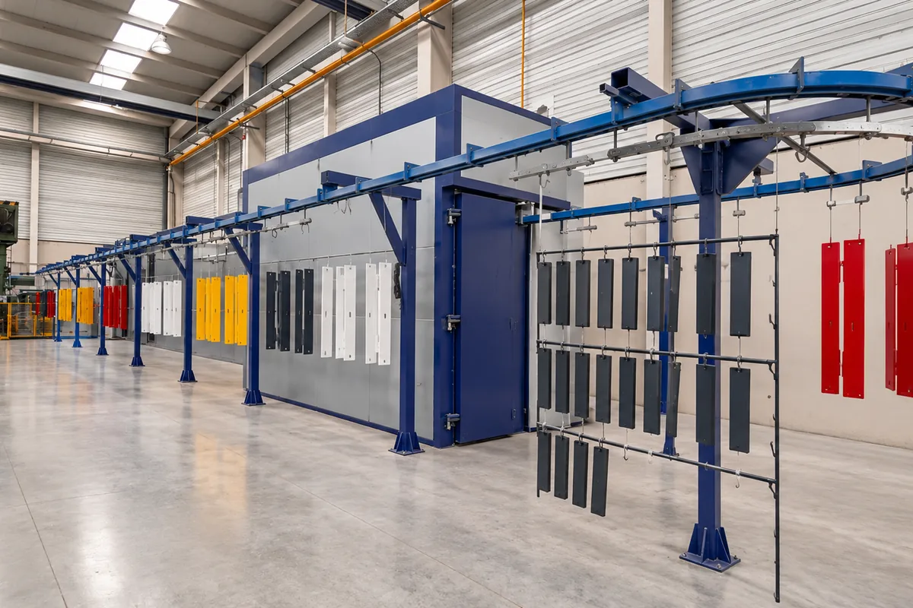
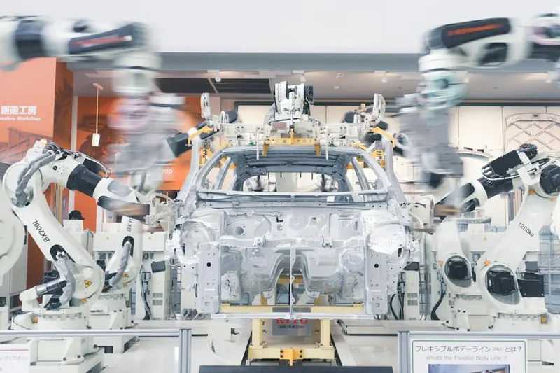
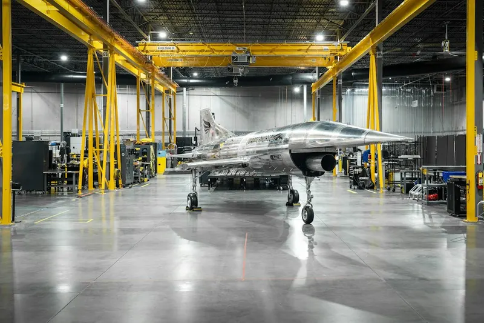
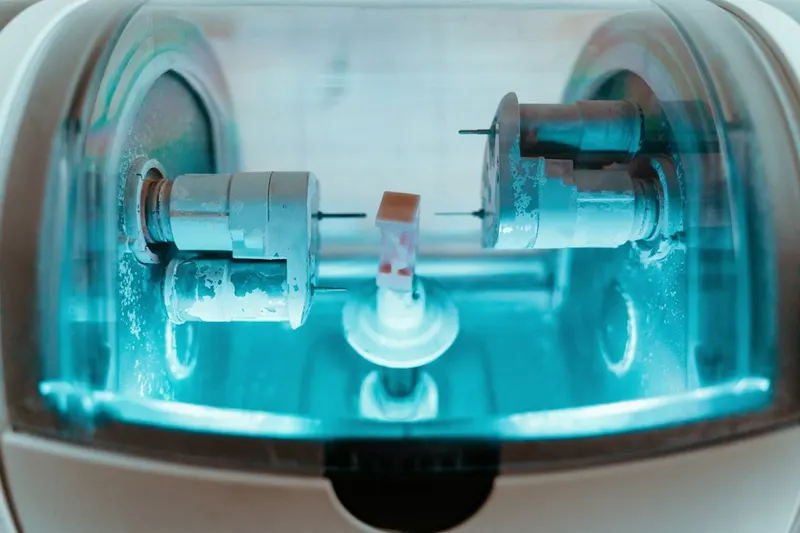
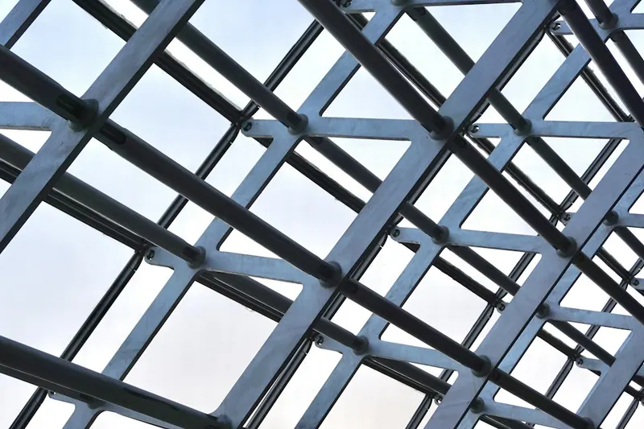

Automobilgintza eta aeronautika
Muntaketa-tresneria, gurdiak eta markoak, euskarriak, babesak eta lerro-egiturak. Ez dugu hegaldiko piezarik pintatzen, ezta hegazkinaren edo ibilgailuaren fabrikatzailearen homologazioa behar duen piezarik ere.
Hauts-pintura Araban
Legution pintatzen dugu, Jundiztik eta Ali-Gobeotik 20 bat minutura. Altzairuzko, altzairu galbanizatuzko eta aluminiozko egiturak eta piezak Arabako industriarentzat, aurrekontu irmoa 24 orduan eta astebeteko ohiko epea.

Araban automobilgintza eta haren hornitzaileak, aeronautika, makineria eta ekipamendu industriala daude, baita sarrailagintza-, arotzeria metaliko- eta galdaragintza-tailer ugari ere Jundizen, Ali-Gobeon, Lautadan eta Aiaraldean.
Guztientzat pintatzen dugu tailer edo lerro batetik ateratzen dena: pieza solteak, serieak eta soldatutako multzoak, pieza bakar batetik hainbat kate betera arte.
Muntaketa-tresneria, gurdiak eta markoak, euskarriak, babesak eta lerro-egiturak. Ez dugu hegaldiko piezarik pintatzen, ezta hegazkinaren edo ibilgailuaren fabrikatzailearen homologazioa behar duen piezarik ere.
Bankadak, karenatuak, makina-ateak eta -armairuak, zure markaren RAL kolorean eta eskatzen duzun distirarekin.
Barandak, eskailerak, itxiturak, pergolak eta egiturak, altzairuzkoak nahiz galbanizatuak. Kanpoan jartzeko badira, zinkez aberastutako inprimazioa erabiltzen dugu.
Eskualde bakoitzean norentzat pintatzen dugun:

AutomobilgintzaTresneria, markoak, euskarriak eta lerro-babesak.
AeronautikaMuntaketa- eta hangar-tresneria, gurdiak eta egiturak.
Makina-erremintakMakinen karenatuak, ateak, bankadak eta armairuak.
Egitura metalikoaHabeak, portikoak, saretak eta solairuarteak, 6 m-ko luzerara arte.Goiaingo industrialdean gaude, Legution, N-240 errepidearen ondoan, Vitoria-Gasteiz eta Bilbo artean. Lantegitik errepidez dauden gutxi gorabeherako distantziak:
Lautadan eta Gasteizen, kanpoko korrosibitate-kategoria C2 edo C3 izan ohi da, ISO 12944-2 arauaren arabera: hiri- edo industria-ingurune moderatuetan. Horretarako, nahikoa izan ohi da aurretratamendu egoki baten gainean aplikatutako eta behar bezala ondutako kanporako poliesterrezko hauts-pintura.
Pieza izotz-gatza duen errepide batera, industria-gune oldarkor batera edo kostaldera badoa, sistema indartzen dugu: zinkez aberastutako inprimazioa eta poliesterra, gure C4-H sistema, zigilua homologatzeko bidean.
Ez. Piezak Legutioko gure lantegian entregatu eta jasotzen dira (San Bartolome kalea 11, Goiain industrialdea), zure garraioarekin edo zuk aukeratutako garraiolariarekin. Garraio-kostuak ez daude barne; garraioa behar baduzu, kasuz kasu aztertuko dugu. Ordutegia: astelehenetik ostiralera, 7:00etatik 15:00etara.
Ohiko epea astebetekoa da, piezak lantegian sartzen direnetik. Aurrekontu irmoa lehenago bidaltzen dizugu, 24 lanordu baino lehen.
Gehienez 6 m luze, 2 m garai eta 0,65 m zabal diren piezak onartzen ditugu, bakoitza 165 kg-koa gehienez. Zure pieza handiagoa bada, galdetu iezaguzu.
Bai, baina aurrekontu irmoaren zain egotea gomendatzen dizugu: horrela, prezioa eta epea jakingo dituzu piezak ekarri aurretik. Deitu 945 31 87 71 zenbakira eta noiz etor zaitezkeen esango dizugu.
 Pieza eta egituren termolakatzea
Epoxi, poliester edo epoxi-poliester motako hauts-pintura altzairurako, altzairu galbanizaturako eta aluminiorako, pieza txikietatik handietara. RAL kolore-karta osoa, eta Pantone edo NCS eskatuta. Akabera leunak, testura finekoak edo gofratuak, matetik distiratsura; metalizatuak eta perlatuak ere bai.
Pieza eta egituren termolakatzea
Epoxi, poliester edo epoxi-poliester motako hauts-pintura altzairurako, altzairu galbanizaturako eta aluminiorako, pieza txikietatik handietara. RAL kolore-karta osoa, eta Pantone edo NCS eskatuta. Akabera leunak, testura finekoak edo gofratuak, matetik distiratsura; metalizatuak eta perlatuak ere bai.
 Zinkez aberatsa den inprimazioa
Galbanizatzearen edo zinkatzearen alternatiba: zink-hautsezko inprimazioak altzairua babesten du, eta gainean hauts-pinturazko akabera aplikatzen dugu. C4-H korrosioaren aurkako babes-sistema, ziurtagiria lortzeko prozesuan.
Zinkez aberatsa den inprimazioa
Galbanizatzearen edo zinkatzearen alternatiba: zink-hautsezko inprimazioak altzairua babesten du, eta gainean hauts-pinturazko akabera aplikatzen dugu. C4-H korrosioaren aurkako babes-sistema, ziurtagiria lortzeko prozesuan.
 Aluminiozko profilen lakatzea
Profilak behar duzun kolore eta akaberan, linea eta kontrol berarekin.
Aluminiozko profilen lakatzea
Profilak behar duzun kolore eta akaberan, linea eta kontrol berarekin.
 Altzairu galbanizatuaren termolakatzea
Gasgabetzea eta gainazalaren prestaketa berezia, poroak eta burbuilak saihesteko: zinkaren eta hauts-pinturaren sistema duplexa.
Altzairu galbanizatuaren termolakatzea
Gasgabetzea eta gainazalaren prestaketa berezia, poroak eta burbuilak saihesteko: zinkaren eta hauts-pinturaren sistema duplexa.
 Laser bidezko grabatua eta UV inprimaketa
Laser bidezko grabatua, UV inprimaketa erliebearekin, tanpografia eta serigrafia: logotipoak, erreferentziak eta adierazpenak piezan.
Laser bidezko grabatua eta UV inprimaketa
Laser bidezko grabatua, UV inprimaketa erliebearekin, tanpografia eta serigrafia: logotipoak, erreferentziak eta adierazpenak piezan.
Aurrekontu irmoa, idatziz, 24 lanordu baino gutxiagoan. Nahiago baduzu, deitu.